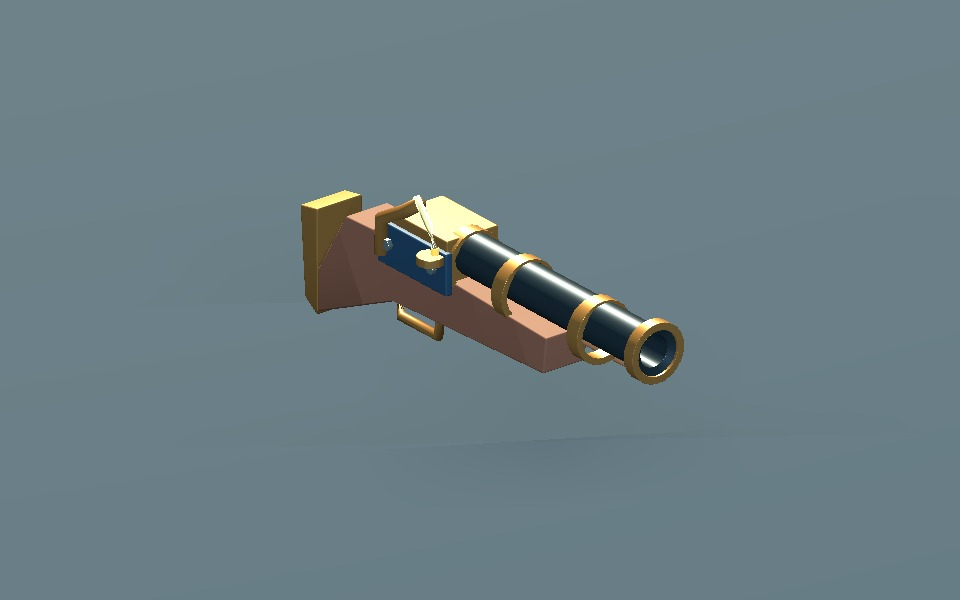
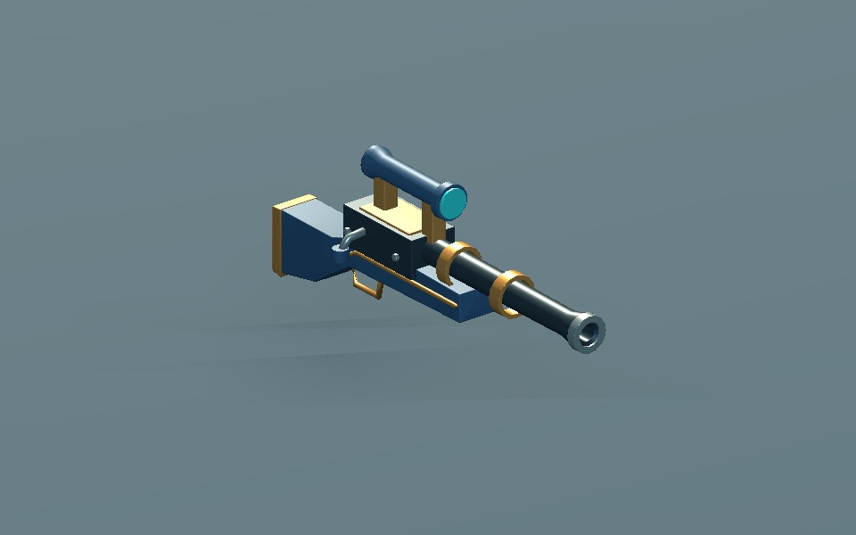
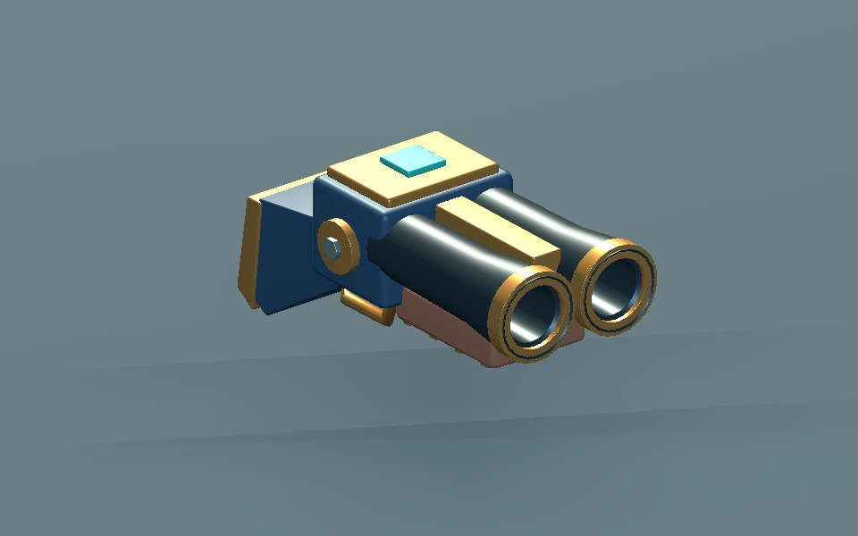
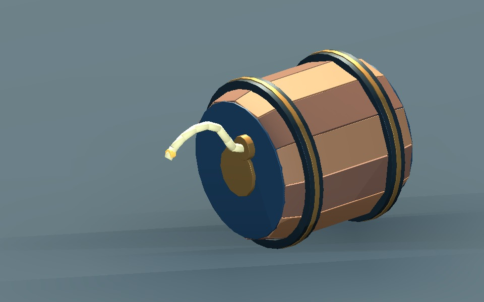
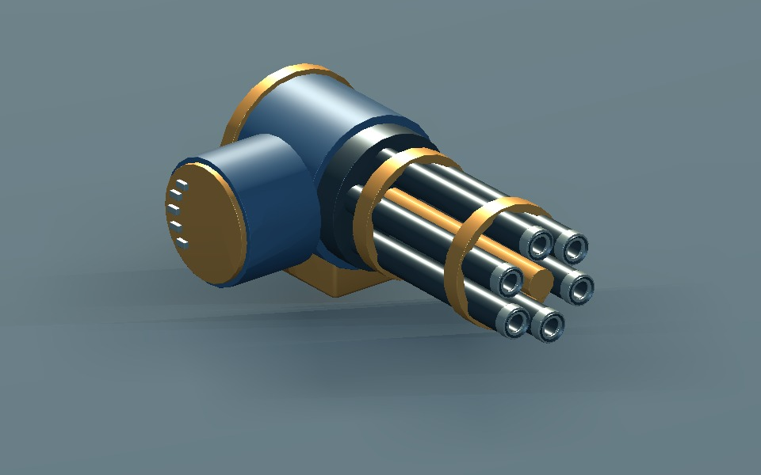
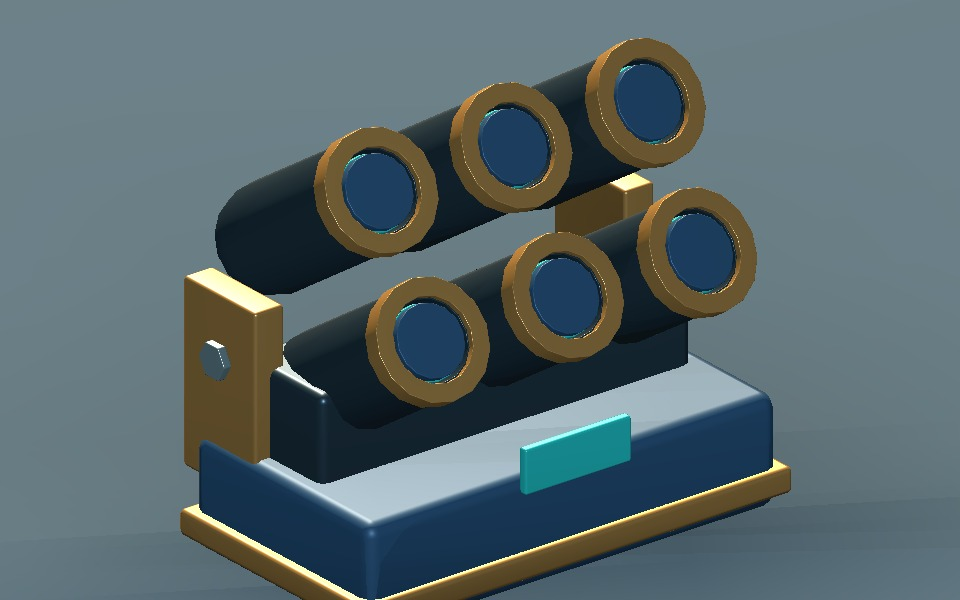
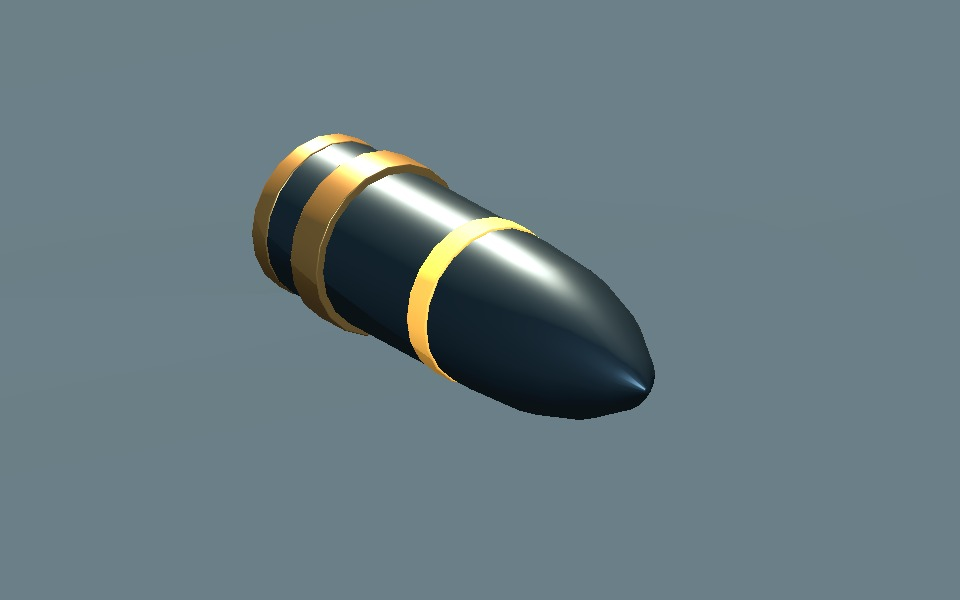
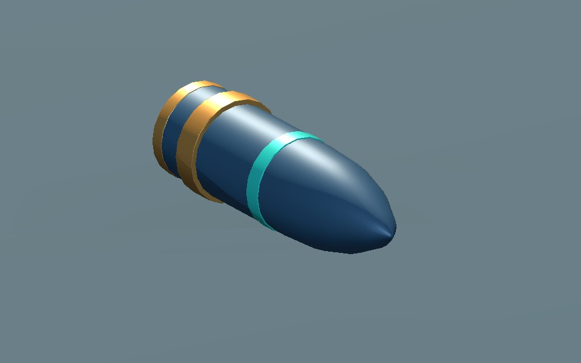
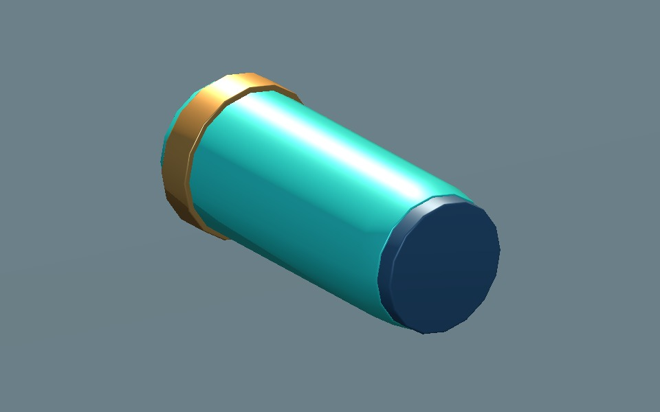

화승총·강선 장총·산탄총은 시험판의 전용 모델로 교체했습니다. 화약통·회전 기관포·연막 발사기는 조립과 구동에 사용할 독립 부품으로 준비했습니다. 포격·함포는 탄체만 제작했습니다.

긴 단총열 · 화승 장치 · 목재 개머리판

긴 정밀 총열 · 조준경 · 남색 몸체

짧고 굵은 쌍총열 · 기존 조립/발사에 연결

가로로 굴리는 몸통 · 8구간 심지 · 분리되는 판재

6개 총열 · 총열 묶음만 회전 · 고정 급탄 드럼

전차식 6관 발사기 · 개별 발사 연결점

작은 포격용 탄체 · 황동 띠

큰 함포용 탄체 · 청록 식별 띠

발사관에서 분리해서 쓸 수 있는 연막탄
9종 Blender 원본 및 GLB 재반입 검사 통과. 새 자산 검사 827개, 기존 화승총·장총·산탄총 검사 260개 통과. GPU 검토 이미지 732장. 총 41,560삼각형 / 166부품, 신규 텍스처 없음.
미구현 스킬의 조립·회전·굴림·발사·부품 비산은 이 페이지의 독립적인 시각 예시입니다. 스킬 수치, 물리 충돌, 연막의 시야 차단, 포격 판정은 아직 연결하지 않았습니다. 반동 도약은 기존 산탄총 자산을 재사용할 수 있습니다.
단순 PBR 재질의 모델 시안입니다. 표면 마모 텍스처, 성능 예산, 사용자 최종 외형 승인은 별도입니다. 정적 평면 끝막음 n-gon, 공중 자산의 총구/탄두 원점, GLB UV·노멀 경계 중복 정점은 용도를 확인하여 허용했습니다. GPU 셰이더 캐시·에디터 설정 경로 진단과 전체 시작 준비를 포함한 리뷰 종료의 RefCounted 1개 경고는 검증 로그에 남겼습니다.